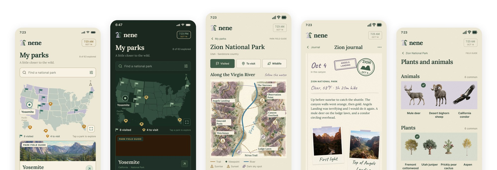
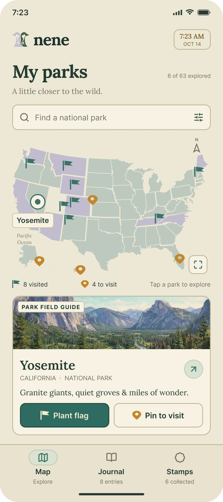
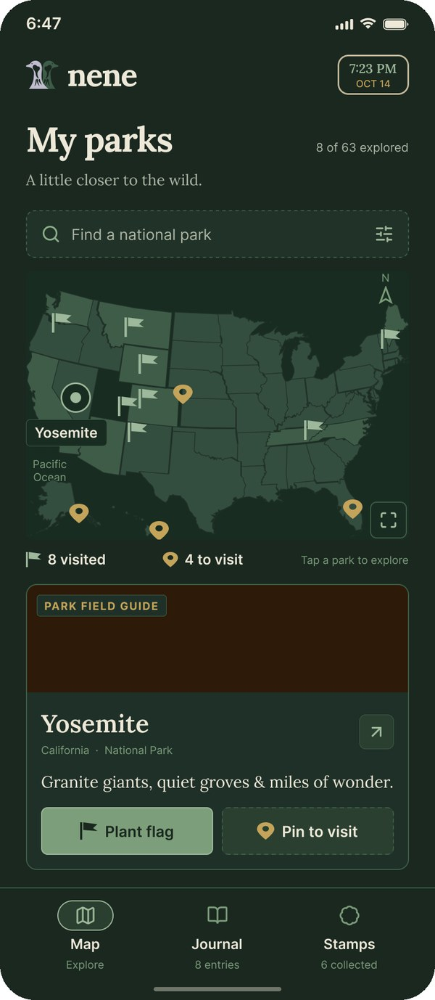
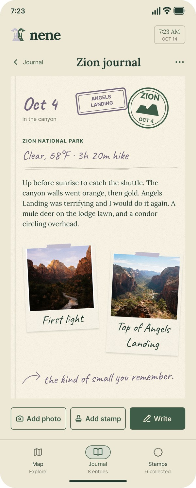

Nene
A national park visit companion

Who
Visitors to US national parks who want to plan a trip and remember it.
What
A map-first app that guides you through park visits and serves as a journal for your national park adventures. See all your national park experiences in one place.
Why
Stamp trackers, trail guides and species ID live in separate apps, and even the closest all-in-one options skip weather logs and species ID. Android options are thinner still.
Intro
Park visits are vivid for a day and then fade.
Nene guides you through the visit and keeps it afterward.
Challenge
Nene had to work as a trail guide, a sightings log, a passport tracker and a keepsake journal without feeling like four apps stitched together. The answer was a map that serves as the home screen, the planning tool and the memory book at once.
Flags mark where you’ve been and pins mark where you’re going. Each park opens into trails, viewpoints, wildlife and weather, then into a journal page styled like a physical park book.
Results
- A US map home screen with flags for visited parks and pins for parks to visit
- A UI that follows the real time of day, with stargazing spots and sunset animal movements at night
- Journal pages with stamps and photos that become captioned Polaroids
- A plants and animals page with scrolling rows and detail sheets on where to spot each one
Design decisions
Map as home
Flags and pins make progress visible at a glance, instead of a list to scroll.

Time of day as the theme
The interface follows the device clock automatically, with no manual switch.
Night unlocks stargazing spots and sunset animal tracking.

Journal as keepsake
Ruled lines, stamps and Polaroids make the record feel like something you’d keep.

Reflections & next steps
On a recent trip to Rocky Mountain National Park, I saw how much planning a visit takes: sunrise and sunset spots, trails, stargazing areas, places to look for wildlife. I also saw how much visitors want to hold onto afterward, from photos and souvenirs to hiking stats. A competitor analysis showed the pieces exist but are scattered across separate apps. I wanted one app that handles both, so a park visit can be relaxed while it happens and memorable once it’s over.
The concept, features and product judgment are mine. I designed the interface with Claude and a Figma agent, and I’m building it with Claude Code. Directing that work taught me that a feature is only as good as the data behind it. I designed park pages with detailed maps, what-to-wear tips and wildlife spotting guidance, but that level of detail doesn’t exist in one place for all 63 parks. The NPS API wasn’t enough, so I’m looking for other data sources.